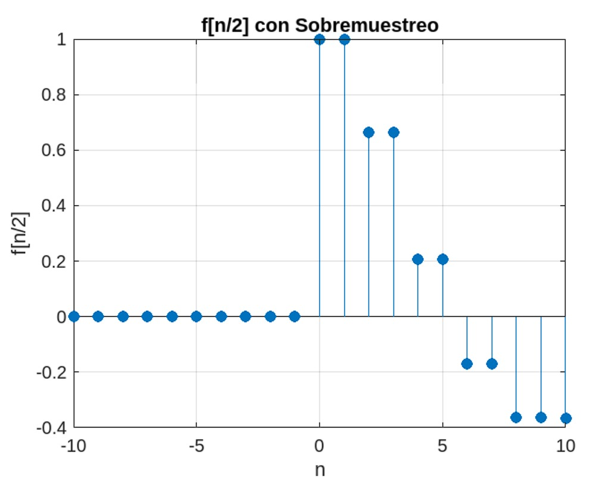
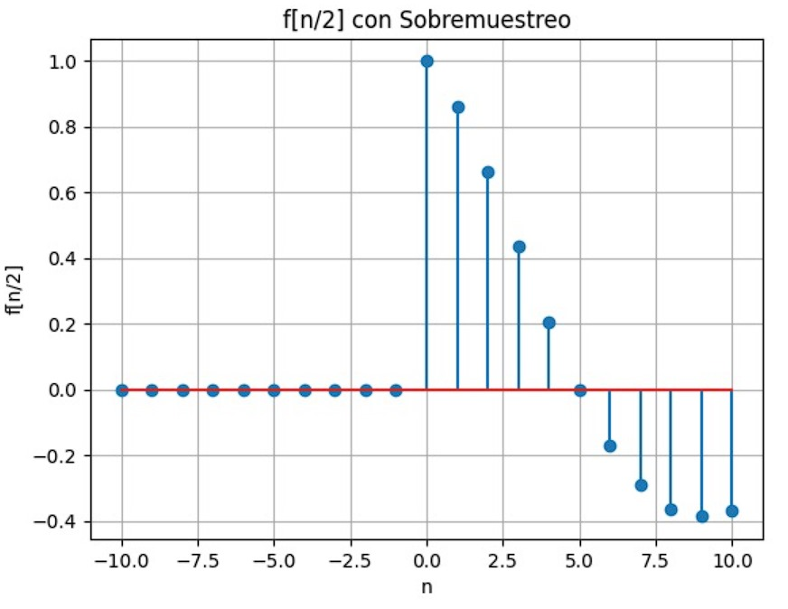
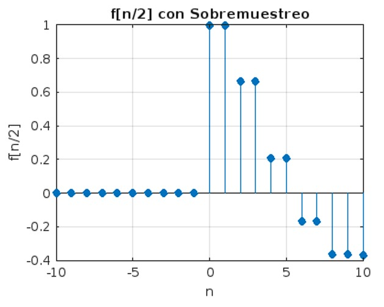
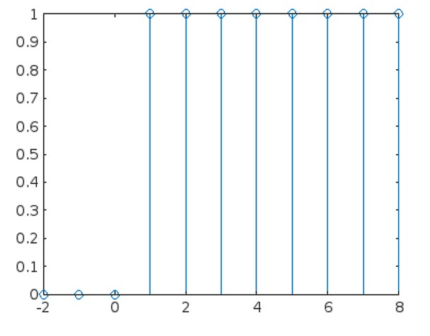
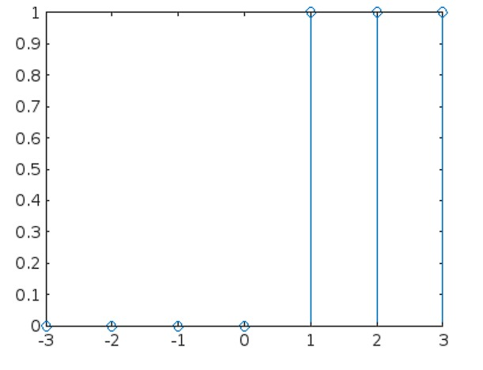
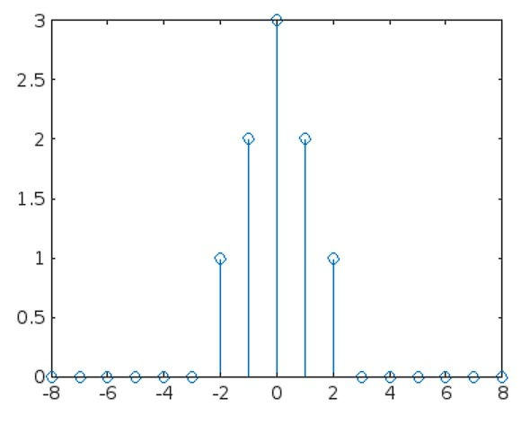
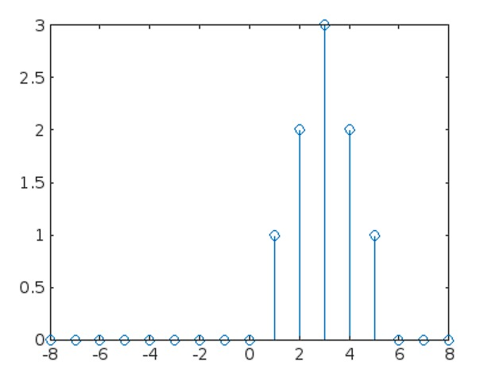
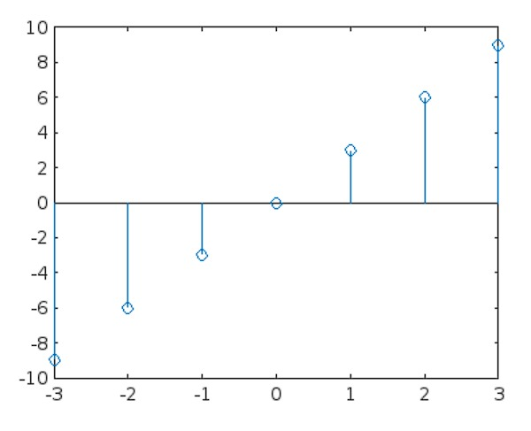
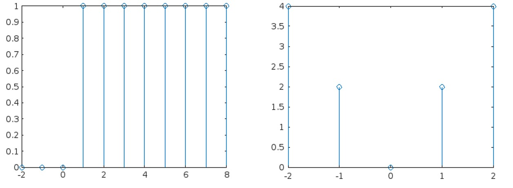

ASyS Practica 4: Señales en tiempo discreto
Contents
Integrantes
- Cruz Guadiana Mauricio
- Cuin Tinoco Victor Manuel
- Santos Garrido Diana Karen
Objetivos de la Practica:
- Manipulación básica de MATLAB
- Gráficas de señales reales y complejas discretas
- Transformación de señales discretas (escalamientos y traslaciones)
Introduccion
El equipo investigo como se grafica con Phyton y como evidencia se realizo el Problema 1 A lo que el resultado nos dio:


El codigo con el que se genero la grafica pues consultarse en este enlace
Problema 1
f = @(n) exp(-floor(n)/5) .* cos(pi*floor(n)/5) .* (floor(n) >= 0); n = -10:10; f_n_2 = f(n/2); figure;
Considere la función de tiempo discreto f[n]=e−n/5 cos(πn/5)u[n]. La sección 3.11 utiliza funciones anónimas para describir señales DT. f = @(n) exp(-n/5).*cos(pi*n/5).*(n>=0); Si bien esta función anónima funciona correctamente para una operación de reducción de resolución como f[2n], no funciona correctamente durante un operación de muestreo superior, como f[n/2]. Modifique la función anónima f para que también Se adapta correctamente a las operaciones de sobremuestreo. Pruebe su código computando y trazando f(n/2) sobre (−10 ≤ n ≤ 10).
stem(n, f_n_2, 'o','filled'); title('f[n/2] con Sobremuestreo'); xlabel('n'); ylabel('f[n/2]'); grid on;
Problema 3
Supongamos que existe un vector x en MATLAB espacio de trabajo, correspondiente a una duración finita Señal DT x[n] * (a) Escriba una función de MATLAB que, cuando pasa el vector x, calcula y devuelve Ex, la energía de x[n]. * (b) Escriba una función de MATLAB que, cuando pasa el vector x, calcula y devuelve Px, la potencia de x[n]. Supongamos que x[n] es periódico y ese vector x contiene datos para un número entero de períodos de x[n].
Energia
x = @(n) (heaviside(n)); n = -2:8; figure stem(n,x(n)); n = 0:5; E = sum(x(n).^2)
E =
5
 Potencia
syms N;
x = @(n) (heaviside(n));
n = -3:3;
figure
stem(n,x(n));
limit(((1/2*N)+1)*(sum(x(n).^2)),N,inf);
 Problema 4
3.1-1 Encuentre la energía de las señales representadas en Figura P3.1-1.
A)
x = @(n) ((-n).*heaviside(-n).*(heaviside(-n))); x2= @(n) ((n).*heaviside(n)); x3= @(n) (heaviside(n)); n = -8:8; figure stem(n,x2(n+3).*x3(-n)+x(n-3).*x3(n+1)); n=-3:3; E = sum(x(n).^2)
E =
14
 B)
x = @(n) ((-n).*heaviside(-n).*(heaviside(-n))); x2= @(n) ((n).*heaviside(n)); x3= @(n) (heaviside(n)); n = -8:8; figure stem(n,x(n-6).*x3(n-2)+x2(n).*x3(-n+3)); n=-3:3; E = sum(x(n).^2)
E =
14
 C)
x = @(n) ((3*n).*heaviside(n)+(3*n).*heaviside(-n)); n = -3:3; figure stem(n,x(n)); n=-3:3; E = sum(x(n).^2)
E = 252
D)
x = @(n) ((2*n).*heaviside(n)+(-2*n).*heaviside(-n)); n = -2:2; figure stem(n,x(n)); n=-2:2; E = sum(x(n).^2);
Problema 5
El archivo se encuentra en el repositorio. Problema_5